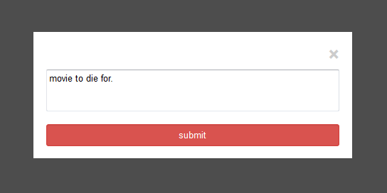

Here is a step by step tour of the website.
Step 1: Enter the Movie GodFather in the search area as shown below and click search.

You should see the following details:

Step 2: Click on a similar movie
Now, let us click on "The GodFather Part II", which is a similar movie displayed below.

We will now see more information regarding "GodFather Part II"

Step 3: Viewing Profile Pages.
Once, we scroll to the bottom of the page, we will see the reviews of registered users as follows:

Now click on jose to view his profile. You should see something something similar to this

As we can see, even without login, we are able to visit profile pages of other registered users.
Now lets click on the "The GodFather" again, which is displayed under jose's favorites section, to go
back to the search page which is displayed way above.
Step 4: Login
Now we will try to add the movie to our favorites. Go ahead, click the favorites button.
Since we are not yet logged in, we will be taken to the login area and asked to login, as follows.

You will now need to login, using the credentials provided to you.
Step 5: Adding a movie to Favorites
Once, you login, you will be redirected back to where you were before you clicked "add to favorites". Now
go ahead and click add to favorites. I clicked on add to favorites using my username.
We will make sure that the movie is added to the favorites area by viewing my profile. To view the profile, I will
just click on the profile option in the menu bar.
Here is what I see

As you can see the movie is added to my list of favorites.
Step 6: Writing a review
Now, I will again click on "The GodFather", this time I will click on "Write Review". Since I am already logged
in, I can directly enter the review in the review box as shown below. Ill go ahead and write "movie to die for."

Once I press submit, I can see the review added in the reviews area, as shown below.
Now go ahead, enjoy the website.